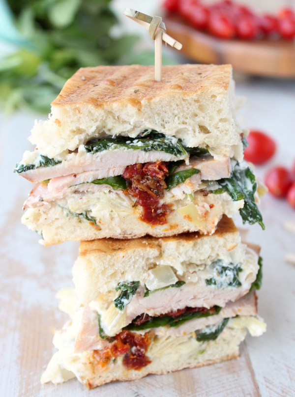
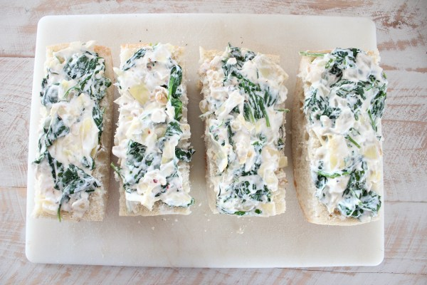
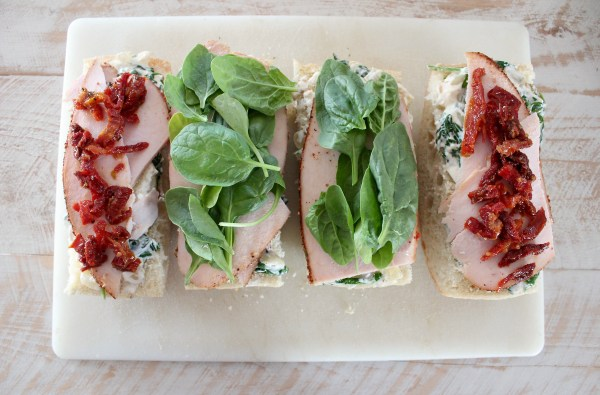
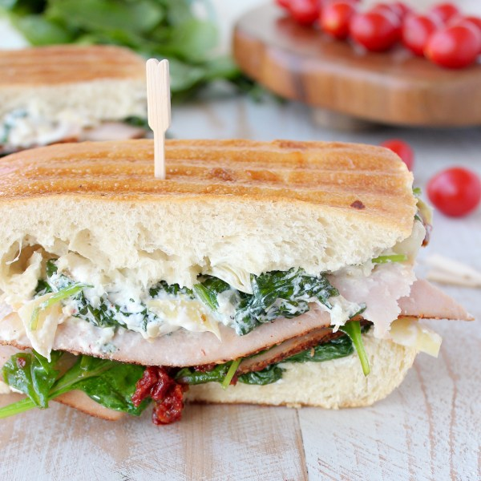

Spinach Artichoke Turkey Panini

Ingredients
- 6 oz sliced turkey
- 1/2loaf ciabatta bread
- ¼ cup goat cheese (crumbled)
- ½ cup greek yogurt
- ½ cup artichoke hearts (chopped)
- 5 cups spinach (divided)
- 3 cloves garlic (minced)
-
Step 1:
In a medium bowl, combine the artichoke hearts, greek yogurt, goat cheese, lemon zest, red pepper flakes and sea salt. Add the cooked spinach, onion and garlic.
Combine everything together, then spread on the sliced ciabatta bread.

-
Step 2:
Add the turkey and top with the optional ingredients of your choice. I added fresh spinach and sun dried tomatoes.

-
Step 3:
Cook until the bread is toasted and crispy, and the spinach artichoke mix is warm and melty!
